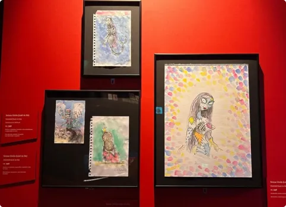
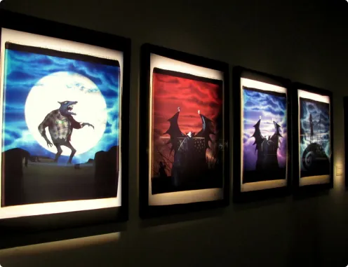
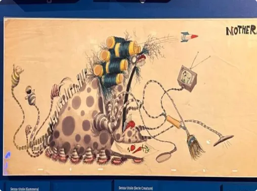

1.
In giro per il mondo
Le opere qui esposte evidenziano la spontaneità del processo creativo di Tim Burton. I disegni realizzati nei quaderni, sui block notes degli alberghi o sui tovaglioli dei ristoranti nei suoi viaggi intorno al mondo nascono d'impulso dalla sua immaginazione irrequieta.

2.
Polaroid
Tra il 1992 e il 1999, Tim Burton, ha prodotto diverse serie di stampe di grandi dimensioni utilizzando una rara macchina fotografica istantanea, la polaroid 20*24. Questi scatti contengono temi ed elementi che compaiono anche nei suoi film.

3.
Influenze
La versatilità di Tim Burton e le influenze dei suoi predecessori sono evidenti nelle sue prime opere. I disegni degli esordi ricordano fumettisti e Illustratori come Theodore Geisel (Dr. Seuss). Gli appunti e gli schizzi del periodo degli studi al CalArts offrono un'idea della sua formazione. Questi lavori rivelano anche le influenze cinematografiche del regista.
